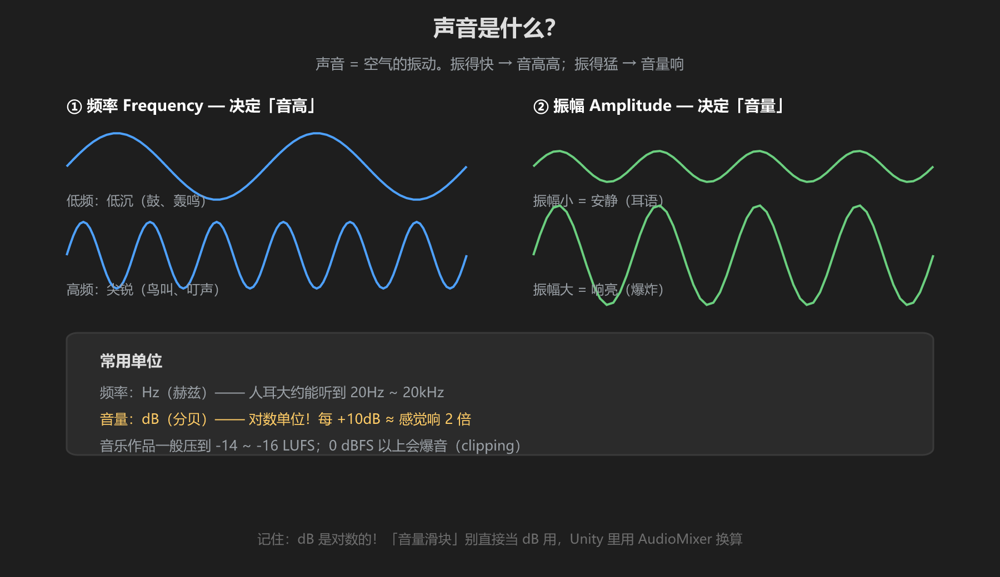
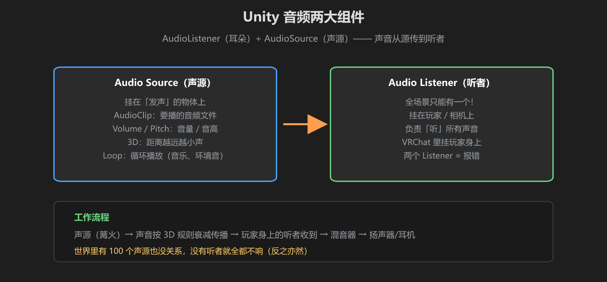

第 1 篇：声音与 Unity 组件 — 频率、音量、AudioSource
VRChat 世界里，篝火噼啪、泉水叮咚、音乐缭绕 —— 这些声音是怎么被"放出来"的？这一篇先懂声音本身，再懂 Unity 的两个音频组件。
1. 声音是什么

图：声音 = 空气振动。频率决定音高，振幅决定音量，单位分别是 Hz 和 dB
| 概念 | 单位 | 决定什么 | 例子 |
|---|---|---|---|
| 频率 | Hz（赫兹） | 音高 | 鼓声低沉（低 Hz），鸟叫尖锐（高 Hz） |
| 振幅 | dB（分贝） | 音量 | 耳语小声，爆炸大声 |
| 采样率 | kHz | 音质上限 | 44100 Hz = 每秒采样 4.4 万次（CD 音质） |
关键认知：dB 是对数单位。+10 dB ≈ 感觉响 2 倍，0 dBFS 以上就会爆音（破音、失真）。做世界时音量一律按 dB 思考。
2. Unity 音频的两大组件

图：AudioSource（声源）→ 传播 → AudioListener（听者）
Audio Source（声源）
- 挂在发声的物体上：篝火、NPC、交互按钮
- AudioClip：要播放的音频文件（在 Project 里）
- Volume：音量（0~1）
- Pitch：音高（1 = 原速，0.5 更慢更低）
- Loop：循环播放（音乐、环境音勾上）
- Play On Awake：场景加载时自动播
- Spatial Blend：0 = 2D 恒定音量，1 = 3D 带距离衰减
Audio Listener（听者）
- 挂在玩家/相机上，负责"听"
- 全场景只能有一个！两个 Listeners = 控制台报错
- VRChat 里听者在玩家身上，所以 3D 声音会自动跟随玩家
世界里有 100 个声源也不卡 —— 声音不是"渲染"，是"播放"。真正影响性能的是同时播放的数量和文件解码开销（第 4 篇讲）。
3. 动手：让世界发出第一声
- Project 里导入一个音频文件（拖进去即可）
- Hierarchy 创建空物体，挂上 Audio Source
- 把音频文件拖到 AudioClip 槽里
- 勾上 Play On Awake，点 Play —— 你会听到声音
- 把 Spatial Blend 拉到 1，走动试试：离得越远越小声（前提：场景里有 AudioListener）
学前检查清单
- 理解了 Hz（音高）和 dB（音量）的区别
- 在场景里成功放出一个声音
- 知道 AudioSource 和 AudioListener 的分工
- 知道 dB 是对数单位、0dBFS 以上会爆音